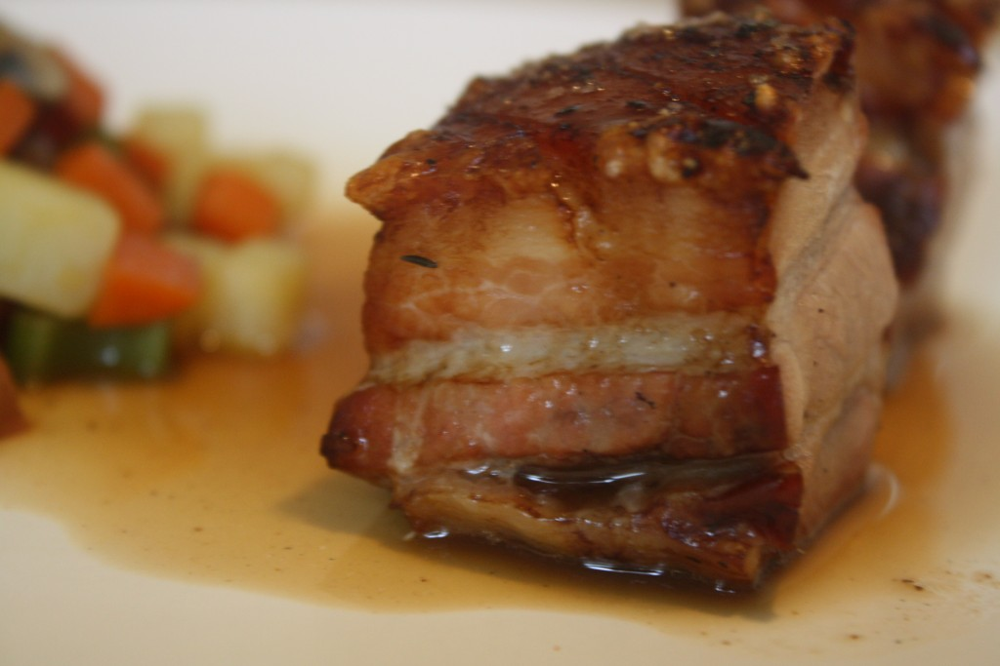

Pressed
Pork
Belly
by Gordon Ramsay

Ingredients
| 2.5 lb | 2 heads | Garlic* | |
| A lot | Thyme | 2 cups | Chicken Stock |
| Sea Salt | Black pepper | ||
| A little cheap white wine |
Kitchen Tools
- Oven
- Chopping board
- Aluminum Foil
- (pic here)*
- Stove Top
Prep: 20 Minutes
- Preheat the oven to 325 degrees Fahrenheit
- Score the skin in a criss-cross pattern*
- Rub generously all over with salt*AND Olive Oil*
- Place garlic, halved side up, on an oiled up roasting tray* and scatter the thyme sprigs (pic below)
- Lay the pork belly on top, skin side up*
- Drizzle more olive oil on top, and sprinkle generously with more sea salt.
- Splash a generous dose of your cheap white wine around the pork*
Cook: 8-16 HRS*
- Loosely cover the whole tray with foil*, and bake for 1.5 hours on 325 F
- Remove the foil, baste the pork with the juices* and stick it back in the oven at the same temp for 1 more hour, while consistently basting it a few times in this time span
- When the pork is tender, put it back on your chopping board and let it cool for 15 minutes.
- While the pork is cooling, place your roasting tray -- with all the juices from the roasted pork -- over high heat on your stove top, and deglaze* the tray with about a cup of white wine, scraping the sediment off the bottom, and popping the heads of the garlic to release the flavor in them. Mix this all up, and bring it to a boil.
- Now that your pork has lost a little temperature, put your other tray on top of the pork, and place your heavy objects on top of this top tray to flatten the pork*. Let the pork cool on its own with all the new weight on top of it for about half an hour.
- Meanwhile, let your gravy boil until it reduces by about half its original amount, then add the 2 cups of chicken stock and bring it back to a boil until it reduces into a thicker gravy*. Strain the gravy through your sieve, and press those pulpy garlic heads again to see if you can squeeze out any more flavor through your sieve and into your gravy. Season the gravy with a few pinches of salt and a lot of freshly ground black pepper.
- Stick the pork belly in the fridge for 4-12 hours to set its shape*
- Ten minutes before you take the pork out of the fridge, preheat the oven to 500 F.
- Take the pork out, and put it back on the chopping board. Cut the pressed pork into however many squares* or rectangles you want to serve, and pat the skin dry a bit with paper tissue.